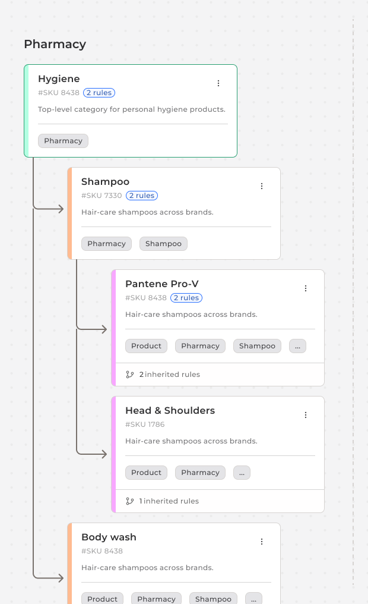
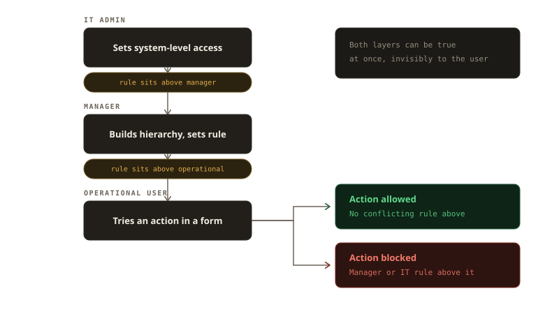
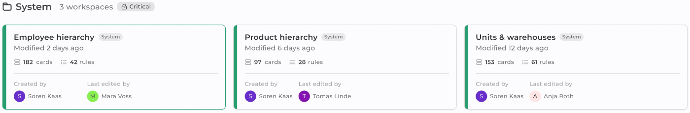
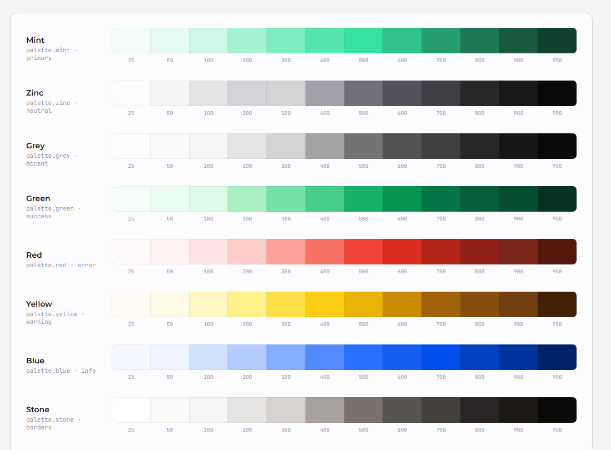
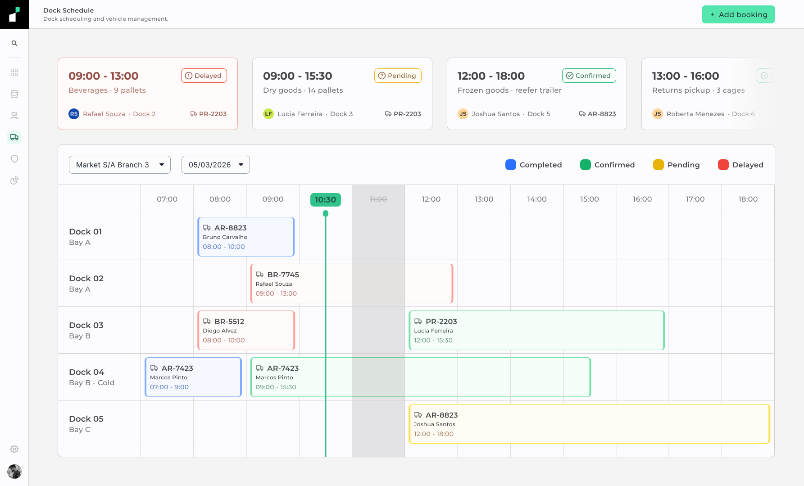
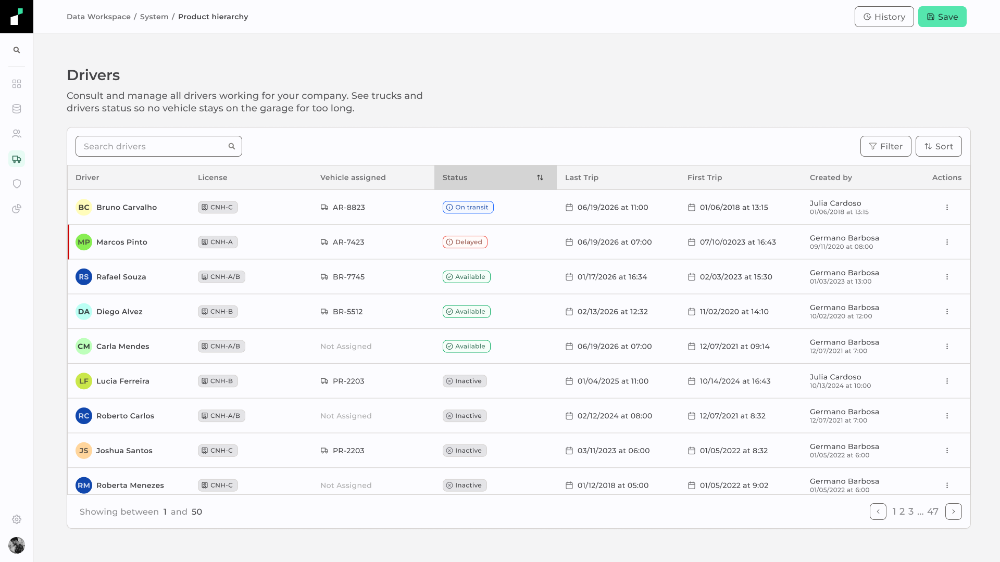

Governing what no spreadsheet can hold
Multi-unit retail operations were running on manual processes — stock thresholds watched by hand, employees onboarded across disconnected files, access policies communicated individually with no way to verify compliance. Instivo needed a governed data layer that operators could build and own without IT in the room.
0
IT tickets required for config changes · managers act directly
5×
projected unit onboarding speed · pre-configured hierarchy, local adjustments only
1
entity record · referenced across all modules with no duplication

Current state · before this project
Retail operations were governed by whoever remembered to act. Configuration changes required IT as a middleman. Rules lived in people's heads, not in the system.
The problem
Retail companies with multiple units had no single place to manage their own operations. Employee records lived in spreadsheets. Supplier orders happened over the phone. Stock was counted manually. A CRM handled the customer side, but nothing governed what happened internally.
A product dropping below 50 units had no automatic trigger. Someone had to notice, find the supplier contact, call, and follow up.
A new employee required manual updates across multiple files with no enforcement that it had been done. An access policy change had to be communicated individually, with no mechanism to verify compliance.
Instivo was built to replace this fragmentation. But a platform where managers configure rules, stock thresholds trigger automatic restocking, and entire operational hierarchies are structured in one place needs something underneath it that most SaaS products skip: a governed data layer that the operation itself controls.
The product
The Data Workspace is where data is created, structured, and maintained. Everything else in Instivo depends on what lives inside it. It does not display data collected elsewhere — it is the source everything else reads from.
Every field available in a form across the platform, every category a product can belong to, every role an employee can be assigned traces back to a hierarchy built here. Scheduling a dock requires the driver's role, the truck's registration, the dock number, the warehouse it belongs to, and the management chain above it. None of that exists unless someone built it in the Data Workspace first.
System workspaces
Ship pre-configured and feed critical platform functions. They cannot be deleted. They are the structural foundation that everything else depends on.
Free workspaces
Created by users for their own organizational purposes. No downstream consequences if modified or removed. Full flexibility within the system boundary.
The distinction mattered for more than technical reasons. The same interface that gives a manager flexibility to build custom hierarchies also sits one wrong deletion away from breaking a form that every new employee depends on.

Three users, one system
Three different roles interacted with the platform, each with a different surface. A rule built for the IT Admin could silently block something a Manager depended on. Getting the permission model right required designing all three simultaneously.
Manager
Hierarchy & rules
Builds and maintains hierarchies, configures rules, defines what each role can see and do. Needs flexibility without being able to break what IT locked down.
IT Admin
Access & privileges
Sets system-level access and defines privileges by user or group. Their rules sit above the manager's. Conflicts happen invisibly unless the interface surfaces them.
Operational user
Forms & workflows
Never opens the Data Workspace. Experiences it through the fields available in a form, the categories visible in a panel, the actions their role permits.
The layering problem was specific. An IT rule could restrict what a manager sees. A manager rule could block an operational action even if IT had granted access. Both could be true simultaneously, invisibly, with no conflict surfaced to the user who hit the wall.
The interface had to make those layers legible without exposing the full permission chain to every user. A manager needed to know their rule would propagate. An operational user needed to know why an action was unavailable.

The hierarchy
The original brief called for a folder system. A folder contains files. Files belong to one folder. The hierarchy is linear and the relationship is one-directional.
A shampoo product belongs to hygiene, hair care, and personal care simultaneously. In a folder model, it can only live in one.
The other two either duplicate the entry or lose the relationship entirely. I proposed a card-based system where entities are linked rather than nested.
Each card represents a real entity in the system with a unique ID. The same card can be referenced in multiple workspaces, playing a different structural role in each. In the product hierarchy it is a child of hygiene. In the stock workspace it is a parent to a restocking threshold. In the transport workspace it is a child of a cargo category.
The analogy I used internally was design tokens. A token is not a file in a folder. It is a value that lives in a system of references, and its meaning depends on the context in which it is used. The canvas reorganized automatically as connections multiplied, removing the responsibility for legibility from the user.

The rule engine
Rules are created inside each card's modal. The structure is fixed: an operator, an entity, a condition, and an action. Each is a dropdown. A manager selects "If," then selects "product," then selects "stock below 50," then selects "trigger restocking." The rule is created without any knowledge of the underlying logic.
Rules can be scoped to a single card or propagated to all children in the hierarchy. A card that inherits a rule from a parent shows it in read-only mode inside the modal. The manager can see what is being enforced and where it came from, but cannot modify it at the child level.

Governance
System workspaces show a lock indicator and a "system" badge on the selection screen. The delete control is visible but disabled. Hovering over it surfaces a tooltip: "This workspace is critical to the system and cannot be deleted." The action is not hidden. The reason it is unavailable is stated at the moment the user needs it.
Hidden controls create ambiguity about whether a feature exists at all. Disabled controls with inline explanations answer that question without requiring documentation.
A manager who cannot find the delete option does not know if they lack permission or if deletion is simply not possible in this context. Hiding the control based on permissions was the easier path. It was not the clearer one.
Hidden control
User doesn't see the action. Doesn't try to take it. But also doesn't know if the feature exists, if they lack access, or if something is preventing it. Ambiguity stays open.
Disabled + tooltip
User sees the action. Sees it is unavailable. Sees why. The constraint is communicated at the exact moment the user needs it. No documentation required.
The same logic applied to inherited rules inside card modals. A rule propagated from a parent is visible to the child's manager but marked as read-only, with a reference to its origin. They can see the constraint and trace it back. They cannot accidentally remove it while editing something else.

Design system
The design system I inherited had no tokens. Components that performed the same function existed in multiple versions with no shared source. The Figma file had no structure that would survive a significant change to the visual language. There was no responsive logic because the product was considered desktop-only.
I rebuilt it in four layers. Core holds design best practices: a 4px spacing grid, a defined type scale, base color values. Palette holds color ramps from 25 to 950 across every hue the system might need. Brand is where client-specific decisions live. Semantic splits into three dimensions: color with light and dark modes, size with desktop, tablet, and mobile breakpoints, and type with the same three breakpoints.
The layering meant that adapting the system to a new client required changes to the Brand layer only. Core and Palette stayed fixed. Semantic recalculated automatically.

Fleet & Dock
The Data Workspace did not operate in isolation. Instivo included a second module for dock and fleet management: scheduling incoming trucks across numbered docks, tracking drivers and vehicles, logging cargo and destinations.
The driver that a manager registered in a hierarchy was the same driver that appeared in a dock booking, pulled automatically from the same record.
Booking a dock slot required a driver record with a valid license category, a vehicle record with a registered plate, a dock record with its assigned bay, and a warehouse record with its management chain. All of those entities were built and maintained in the Data Workspace. The Fleet & Dock module consumed them directly.
No duplication, no manual cross-entry, no integration layer between the two modules. If the driver's license category changed in the Data Workspace, the change was immediately reflected in every dock booking associated with that driver. One record. One source of truth.


Outcome
The product did not reach public launch during my engagement. I left after approximately four months of design work. What follows is projected based on enterprise SaaS benchmarks for governance platforms of comparable scope.
73%
Projected reduction in configuration time when non-technical users act without filing IT requests
Enterprise SaaS governance benchmarks
5×
Faster unit onboarding: hierarchy ships pre-configured, only local adjustments required
Comparable platform deployments
100%
Of manual processes with a defined trigger replaced by rules that enforce the action automatically
System design · rule engine coverage
0
Duplicate entity records across modules — one card, referenced everywhere, updated once
Card-linked architecture
Before Instivo, a configuration change required IT involvement as an intermediary. A manager who needed to modify access permissions, add a product category, or change a restocking threshold could not do it directly. The Data Workspace made all of those actions self-service for the roles that owned them.
Let's talk
Got a project?
Let's make it work.